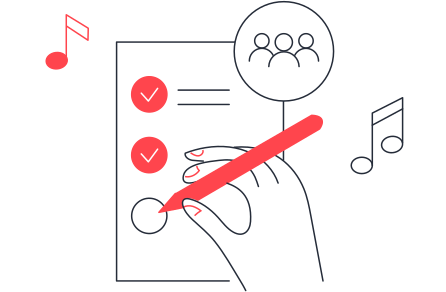

Main activities
Arriva il giorno del festival. Antonella segue le attività del festival a lei assegnate e riesce ad intercettare molte persone che, interessate a MSF, le lasciano il loro contatto.

Gruppi strutturati di volontari attivi nella community digitale che rappresentano un punto di riferimento per tutta MSF anche sul territorio. Grazie alla loro conoscenza approfondita di MSF, sono in grado di organizzare eventi più complessi e di proporre format e attività innovativi. Dopo tre anni di volontariato attivo, potranno contribuire alla vita associativa di MSF.
Attivare la propria rete e le proprie compentenze, anche professionali, in supporto dalla mission di MSF. Grazie spazi e strumenti appositi, possono conoscere e collaborare persone che condividono gli stessi valori e sviluppare nuove idee per la community.
Antonella legge sulla piattaforma della community che il Physical Hub della sua città ha bisogno di aiuto per la realizzazione di un panel dedicato ad MSF all'interno del festival cittadino. Entusiasta della possibilità, compila il form per partecipare.
Antonella viene invitata alla riunione preparatoria al Physical Hub. Qui potrà conoscere i membri e partecipare alla formazione. Oltre alle attività necessarie all’organizzazione del festival, viene indirizzata sulla sezione dedicata della piattaforma della community dove potrà leggere alcuni materiali dedicati ed accedere ad altri approfondimenti.
Arriva il giorno del festival. Antonella segue le attività del festival a lei assegnate e riesce ad intercettare molte persone che, interessate a MSF, le lasciano il loro contatto.
Alla fine del festival i membri del Physical Hub si incontrano per discutere come é andato l’evento e preparare il report, che verrà poi caricato e condiviso sulla piattaforma della community. I contatti che sono stati raccolti durante il festival verranno invece inseriti nel database per essere poi ricontattati da MSF.
Antonella è entusiasta dell'esperienza appena conclusa e decide di continuare a contribuire alle attività del Physical Hub.
Antonella riceve un messaggio di ringraziamento per il suo contributo, con una serie di numeri e notizie legati ai suo interessi e alle sue passioni. Le sue attività e interazioni sulla piattaforma verranno salvate e analizzate in forma aggregata per migliorare le proposte della community e aumentare il livello di engagement.
Una serie di indicatori per misurare l’efficienza del Nuovo Modello di Volontariato in relazione ai Physical Hubs
Le tappe per raggiungere i nostri obiettivi legati ai Physical Hubs.